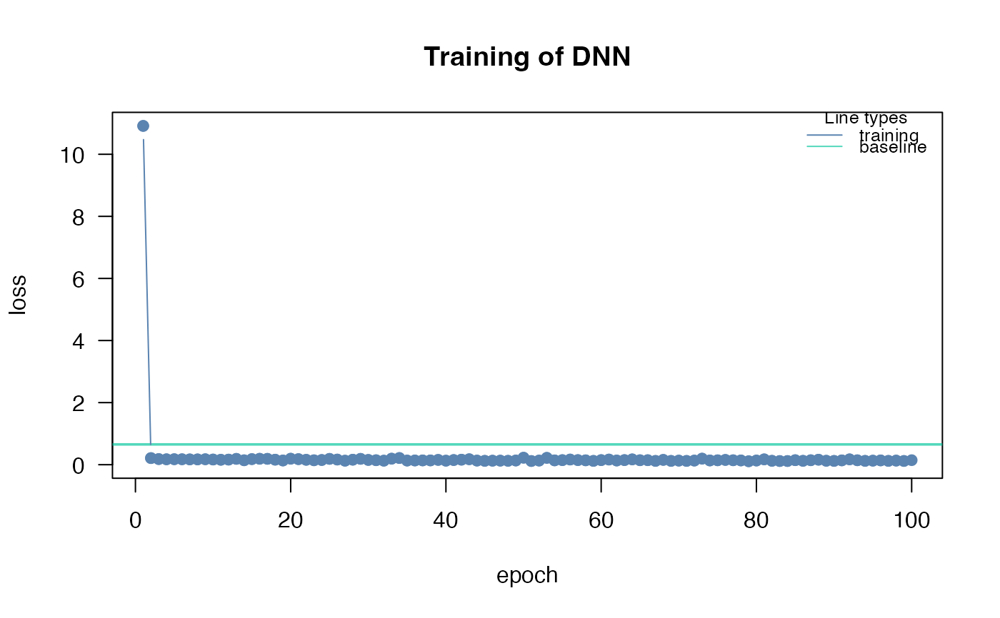

Predict from a fitted dnn model
Usage
# S3 method for class 'citodnn'
predict(
object,
newdata = NULL,
type = c("link", "response", "class"),
device = c("cpu", "cuda", "mps"),
batchsize = NULL,
...
)
# S3 method for class 'citodnnBootstrap'
predict(
object,
newdata = NULL,
type = c("link", "response", "class"),
device = c("cpu", "cuda", "mps"),
batchsize = NULL,
reduce = c("mean", "median", "none"),
...
)Arguments
- object
a model created by
dnn- newdata
new data for predictions
- type
type of predictions. The default is on the scale of the linear predictor, "response" is on the scale of the response, and "class" means that class predictions are returned (if it is a classification task)
- device
device on which network should be trained on.
- batchsize
number of samples that are predicted at the same time
- ...
additional arguments
- reduce
predictions from bootstrapped model are by default reduced (mean, optional median or none)
Examples
# \donttest{
if(torch::torch_is_installed()){
library(cito)
set.seed(222)
validation_set<- sample(c(1:nrow(datasets::iris)),25)
# Build and train Network
nn.fit<- dnn(Sepal.Length~., data = datasets::iris[-validation_set,])
# Use model on validation set
predictions <- predict(nn.fit, iris[validation_set,])
# Scatterplot
plot(iris[validation_set,]$Sepal.Length,predictions)
# MAE
mean(abs(predictions-iris[validation_set,]$Sepal.Length))
}
#> Loss at epoch 1: 4.162891, lr: 0.01000

#> Loss at epoch 2: 0.799209, lr: 0.01000
#> Loss at epoch 3: 0.215739, lr: 0.01000
#> Loss at epoch 4: 0.348920, lr: 0.01000
#> Loss at epoch 5: 0.191092, lr: 0.01000
#> Loss at epoch 6: 0.272156, lr: 0.01000
#> Loss at epoch 7: 0.180525, lr: 0.01000
#> Loss at epoch 8: 0.137848, lr: 0.01000
#> Loss at epoch 9: 0.117742, lr: 0.01000
#> Loss at epoch 10: 0.314013, lr: 0.01000
#> Loss at epoch 11: 0.385247, lr: 0.01000
#> Loss at epoch 12: 0.277221, lr: 0.01000
#> Loss at epoch 13: 0.174377, lr: 0.01000
#> Loss at epoch 14: 0.257897, lr: 0.01000
#> Loss at epoch 15: 0.207365, lr: 0.01000
#> Loss at epoch 16: 0.135985, lr: 0.01000
#> Loss at epoch 17: 0.146596, lr: 0.01000
#> Loss at epoch 18: 0.166931, lr: 0.01000
#> Loss at epoch 19: 0.304629, lr: 0.01000
#> Loss at epoch 20: 0.154057, lr: 0.01000
#> Loss at epoch 21: 0.248501, lr: 0.01000
#> Loss at epoch 22: 0.172920, lr: 0.01000
#> Loss at epoch 23: 0.222433, lr: 0.01000
#> Loss at epoch 24: 0.156550, lr: 0.01000
#> Loss at epoch 25: 0.140345, lr: 0.01000
#> Loss at epoch 26: 0.141800, lr: 0.01000
#> Loss at epoch 27: 0.116973, lr: 0.01000
#> Loss at epoch 28: 0.114576, lr: 0.01000
#> Loss at epoch 29: 0.129923, lr: 0.01000
#> Loss at epoch 30: 0.131544, lr: 0.01000
#> Loss at epoch 31: 0.217724, lr: 0.01000
#> Loss at epoch 32: 0.159108, lr: 0.01000
#> Loss at epoch 33: 0.290603, lr: 0.01000
#> Loss at epoch 34: 0.140372, lr: 0.01000
#> Loss at epoch 35: 0.196878, lr: 0.01000
#> Loss at epoch 36: 0.137091, lr: 0.01000
#> Loss at epoch 37: 0.134987, lr: 0.01000
#> Loss at epoch 38: 0.170876, lr: 0.01000
#> Loss at epoch 39: 0.118814, lr: 0.01000
#> Loss at epoch 40: 0.169881, lr: 0.01000
#> Loss at epoch 41: 0.143451, lr: 0.01000
#> Loss at epoch 42: 0.141887, lr: 0.01000
#> Loss at epoch 43: 0.131245, lr: 0.01000
#> Loss at epoch 44: 0.119199, lr: 0.01000
#> Loss at epoch 45: 0.176881, lr: 0.01000
#> Loss at epoch 46: 0.148022, lr: 0.01000
#> Loss at epoch 47: 0.108124, lr: 0.01000
#> Loss at epoch 48: 0.137315, lr: 0.01000
#> Loss at epoch 49: 0.118981, lr: 0.01000
#> Loss at epoch 50: 0.185030, lr: 0.01000
#> Loss at epoch 51: 0.214648, lr: 0.01000
#> Loss at epoch 52: 0.122630, lr: 0.01000
#> Loss at epoch 53: 0.138107, lr: 0.01000
#> Loss at epoch 54: 0.121453, lr: 0.01000
#> Loss at epoch 55: 0.182041, lr: 0.01000
#> Loss at epoch 56: 0.183791, lr: 0.01000
#> Loss at epoch 57: 0.106583, lr: 0.01000
#> Loss at epoch 58: 0.159262, lr: 0.01000
#> Loss at epoch 59: 0.142598, lr: 0.01000
#> Loss at epoch 60: 0.228100, lr: 0.01000
#> Loss at epoch 61: 0.118263, lr: 0.01000
#> Loss at epoch 62: 0.201940, lr: 0.01000
#> Loss at epoch 63: 0.170098, lr: 0.01000
#> Loss at epoch 64: 0.120067, lr: 0.01000
#> Loss at epoch 65: 0.151831, lr: 0.01000
#> Loss at epoch 66: 0.141935, lr: 0.01000
#> Loss at epoch 67: 0.120480, lr: 0.01000
#> Loss at epoch 68: 0.116482, lr: 0.01000
#> Loss at epoch 69: 0.152884, lr: 0.01000
#> Loss at epoch 70: 0.152200, lr: 0.01000
#> Loss at epoch 71: 0.169896, lr: 0.01000
#> Loss at epoch 72: 0.102891, lr: 0.01000
#> Loss at epoch 73: 0.099467, lr: 0.01000
#> Loss at epoch 74: 0.158108, lr: 0.01000
#> Loss at epoch 75: 0.116454, lr: 0.01000
#> Loss at epoch 76: 0.168929, lr: 0.01000
#> Loss at epoch 77: 0.139305, lr: 0.01000
#> Loss at epoch 78: 0.129169, lr: 0.01000
#> Loss at epoch 79: 0.126614, lr: 0.01000
#> Loss at epoch 80: 0.212161, lr: 0.01000
#> Loss at epoch 81: 0.105516, lr: 0.01000
#> Loss at epoch 82: 0.108737, lr: 0.01000
#> Loss at epoch 83: 0.129248, lr: 0.01000
#> Loss at epoch 84: 0.147712, lr: 0.01000
#> Loss at epoch 85: 0.121083, lr: 0.01000
#> Loss at epoch 86: 0.119427, lr: 0.01000
#> Loss at epoch 87: 0.179636, lr: 0.01000
#> Loss at epoch 88: 0.263224, lr: 0.01000
#> Loss at epoch 89: 0.141008, lr: 0.01000
#> Loss at epoch 90: 0.206720, lr: 0.01000
#> Loss at epoch 91: 0.206442, lr: 0.01000
#> Loss at epoch 92: 0.161486, lr: 0.01000
#> Loss at epoch 93: 0.098737, lr: 0.01000
#> Loss at epoch 94: 0.152908, lr: 0.01000
#> Loss at epoch 95: 0.121548, lr: 0.01000
#> Loss at epoch 96: 0.110608, lr: 0.01000
#> Loss at epoch 97: 0.130229, lr: 0.01000
#> Loss at epoch 98: 0.106076, lr: 0.01000
#> Loss at epoch 99: 0.140209, lr: 0.01000
#> Loss at epoch 100: 0.303762, lr: 0.01000
#> [1] 0.490117
# }